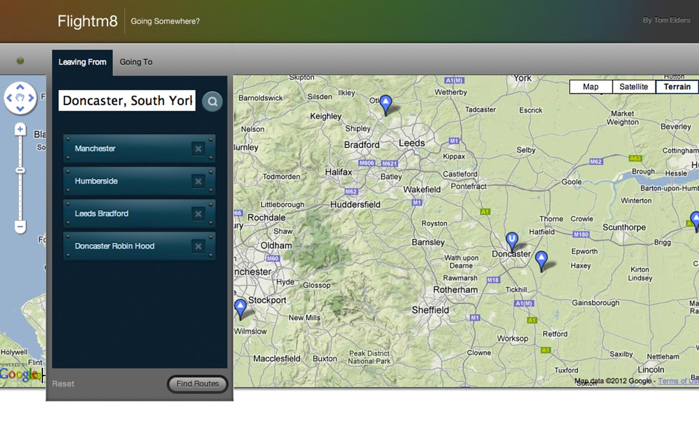
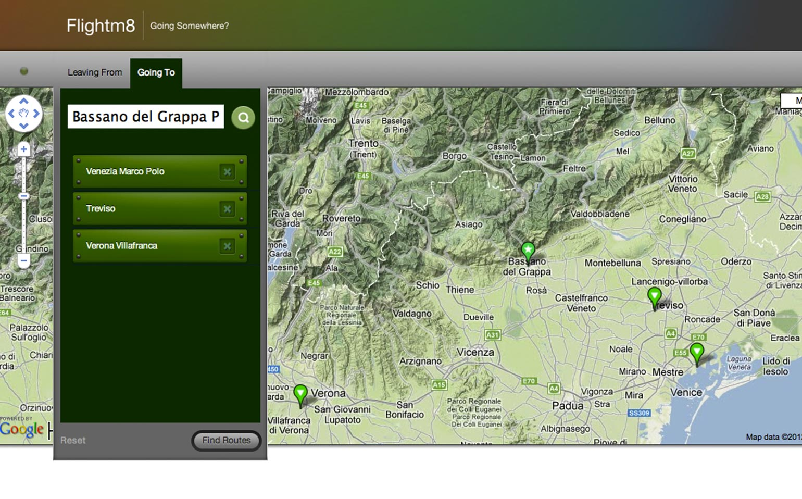
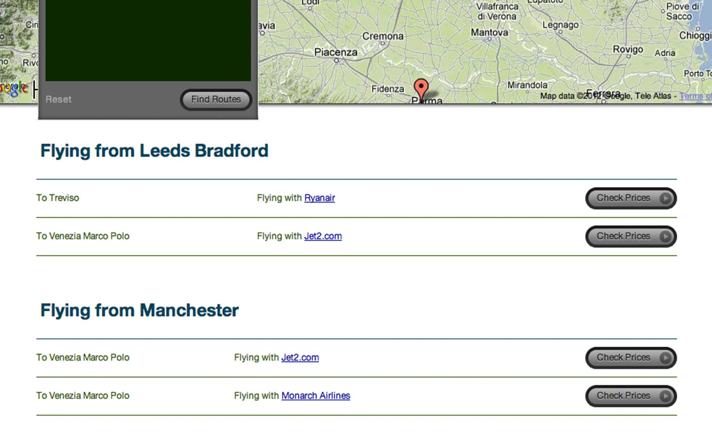
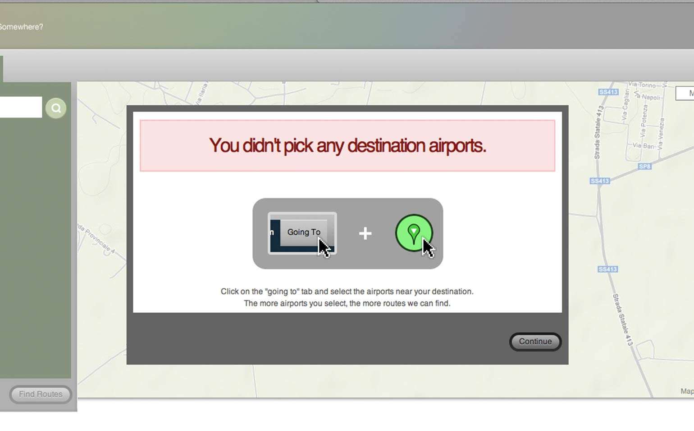

Description: A personal project that helps people easily find flights most convenient for them.
Year: 2009
Key Technologies: Javascript, Google Maps API

Let's assume you need to fly form Doncaster to Bassano Del Grappa in northern italy. The first thing you need to know is which airports you can fly from. FlightM8 makes it easy to select airports that you are prepared to travel to, but are very rarely grouped together on other flight finder websites.
Doncaster has it's own airport, but very few destinations. People local to Doncaster will often travel to Manchester, Leeds or Humberside for flights.

It's likely you've never been to Bassano Del Grappa before, so you probably have no idea what airports you can fly to. FlightM8 shows you the nearest airports are Venice Marco Polo, Venice Treviso and Verona. These three airports are never grouped together on flight finder websites.

FlightM8 will then search all airport-to-airpot combinations and show you which airlines fly which routes. There are hundreds airlines in the FlightM8 database, and every commercial airport in the world.
The route data was scraped from the web but is now long out of date. However, people report that FlightM8 is still helping them find flights they couldn't find on other websites.

The project relieved a nice review from KillerStartups.com and a lot of positive comments from the Hacker News community.
I stopped developing FlightM8 when Google bought IATA and it's data in 2010. Google released their own Google Maps powered flight finder in 2011.